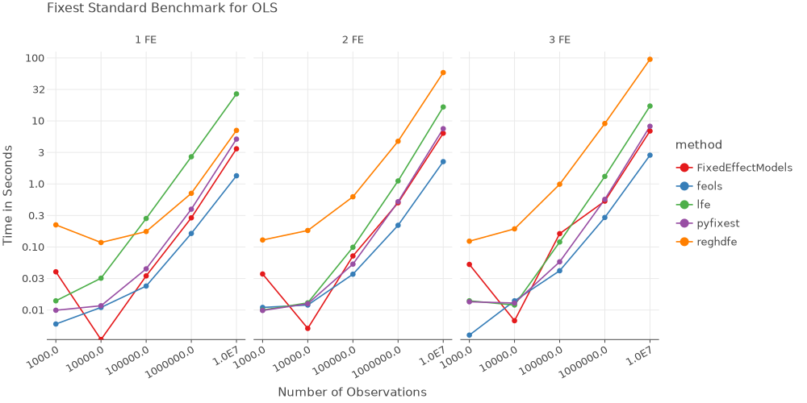
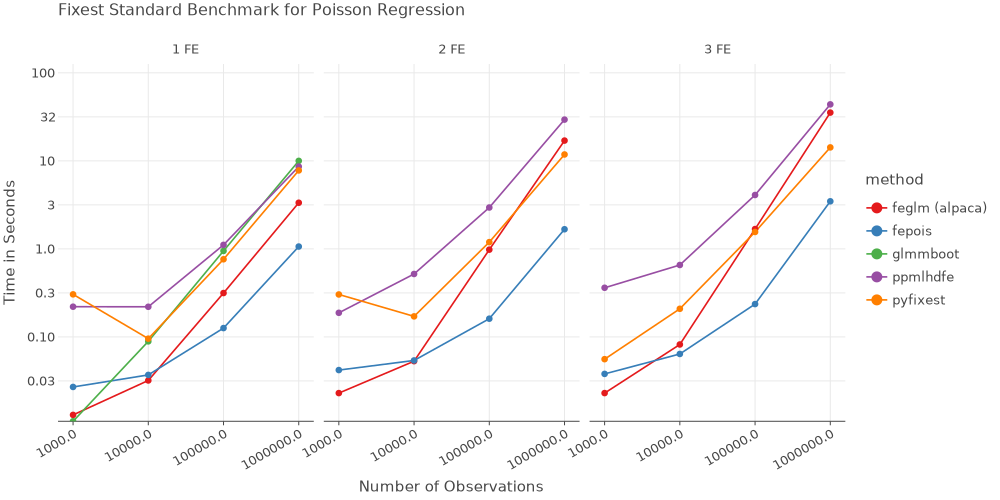

PyFixest: Fast High-Dimensional Fixed Effects Regression in Python
PyFixest is a Python implementation of the formidable fixest package for fast high-dimensional fixed effects regression. The package aims to mimic fixest syntax and functionality as closely as Python allows: if you know fixest well, the goal is that you won’t have to read the docs to get started! In particular, this means that all of fixest's defaults are mirrored by PyFixest - currently with only one small exception . Nevertheless, for a quick introduction, you can take a look at the tutorial or the regression chapter of Arthur Turrell’s book on Coding for Economists .
Features
OLS and IV Regression
Poisson Regression
Multiple Estimation Syntax
Several Robust and Cluster Robust Variance-Covariance Types
Wild Cluster Bootstrap Inference (via wildboottest )
Difference-in-Difference Estimators:
Installation
You can install the release version from PyPi by running
or the development version from github by running
+ https:// github.com/ s3alfisc/ pyfixest.git
Benchmarks
All benchmarks follow the fixest benchmarks . All non-pyfixest timings are taken from the fixest benchmarks.
 
Quickstart
Fixed Effects Regression via feols()
You can estimate a linear regression models just as you would in fixest - via feols():
from pyfixest.estimation import feols, fepoisfrom pyfixest.utils import get_datafrom pyfixest.summarize import etable= get_data()"Y ~ X1 | f1 + f2" , data= data).summary()
###
Estimation: OLS
Dep. var.: Y, Fixed effects: f1+f2
Inference: CRV1
Observations: 997
| Coefficient | Estimate | Std. Error | t value | Pr(>|t|) | 2.5 % | 97.5 % |
|:--------------|-----------:|-------------:|----------:|-----------:|--------:|---------:|
| X1 | -0.919 | 0.065 | -14.057 | 0.000 | -1.053 | -0.786 |
---
RMSE: 1.441 R2: 0.609 R2 Within: 0.2
Multiple Estimation
You can estimate multiple models at once by using multiple estimation syntax :
# OLS Estimation: estimate multiple models at once = feols("Y + Y2 ~X1 | csw0(f1, f2)" , data = data, vcov = {'CRV1' :'group_id' })# Print the results for i in range (6 )])
Model: Y~X1
Model: Y2~X1
Model: Y~X1|f1
Model: Y2~X1|f1
Model: Y~X1|f1+f2
Model: Y2~X1|f1+f2
est1 est2 est3 est4 est5 est6
------------ ---------------- ----------------- ----------------- ----------------- ----------------- -----------------
depvar Y Y2 Y Y2 Y Y2
-----------------------------------------------------------------------------------------------------------------------------
Intercept 0.919*** (0.121) 1.064*** (0.232)
X1 -1.0*** (0.117) -1.322*** (0.211) -0.949*** (0.087) -1.266*** (0.212) -0.919*** (0.069) -1.228*** (0.194)
-----------------------------------------------------------------------------------------------------------------------------
f1 - - x x x x
f2 - - - - x x
-----------------------------------------------------------------------------------------------------------------------------
R2 0.123 0.037 0.437 0.115 0.609 0.168
S.E. type by: group_id by: group_id by: group_id by: group_id by: group_id by: group_id
Observations 998 999 997 998 997 998
-----------------------------------------------------------------------------------------------------------------------------
Significance levels: * p < 0.05, ** p < 0.01, *** p < 0.001
Adjust Standard Errors “on-the-fly”
Standard Errors can be adjusted after estimation, “on-the-fly”:
= fit.fetch_model(0 )"hetero" ).summary()
Model: Y~X1
###
Estimation: OLS
Dep. var.: Y
Inference: hetero
Observations: 998
| Coefficient | Estimate | Std. Error | t value | Pr(>|t|) | 2.5 % | 97.5 % |
|:--------------|-----------:|-------------:|----------:|-----------:|--------:|---------:|
| Intercept | 0.919 | 0.112 | 8.223 | 0.000 | 0.699 | 1.138 |
| X1 | -1.000 | 0.082 | -12.134 | 0.000 | -1.162 | -0.838 |
---
RMSE: 2.158 R2: 0.123
Poisson Regression via fepois()
You can estimate Poisson Regressions via the fepois() function:
= get_data(model = "Fepois" )"Y ~ X1 + X2 | f1 + f2" , data = poisson_data).summary()
###
Estimation: Poisson
Dep. var.: Y, Fixed effects: f1+f2
Inference: CRV1
Observations: 997
| Coefficient | Estimate | Std. Error | t value | Pr(>|t|) | 2.5 % | 97.5 % |
|:--------------|-----------:|-------------:|----------:|-----------:|--------:|---------:|
| X1 | -0.008 | 0.035 | -0.239 | 0.811 | -0.076 | 0.060 |
| X2 | -0.015 | 0.010 | -1.471 | 0.141 | -0.035 | 0.005 |
---
Deviance: 1068.836